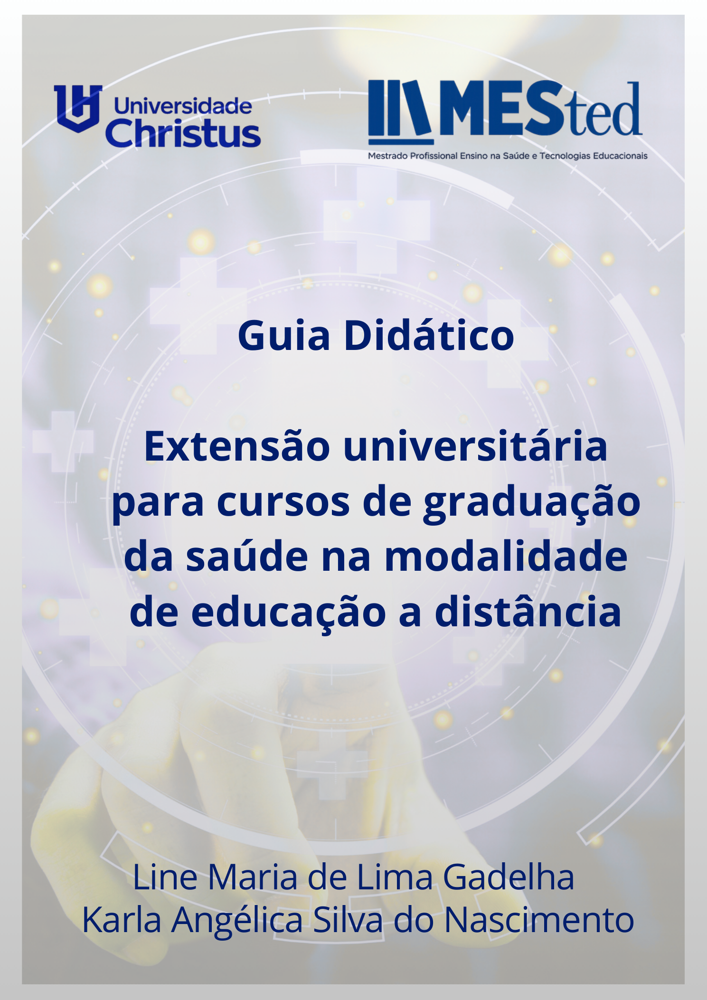

Entre o social e o profissional: extensão nos cursos de saúde à distância
Line Maria de Lima Gadelha e Karla Angélica Silva do Nascimento.
Acessar artigo →Ideias, práticas e publicações para fortalecer a educação e a formação docente.

Para cursos de graduação da saúde na modalidade de Educação a Distância.
Pesquisas e reflexões sobre extensão universitária, educação e tecnologias educacionais.
Line Maria de Lima Gadelha e Karla Angélica Silva do Nascimento.
Acessar artigo →Publicação acadêmica sobre extensão universitária e inclusão digital.
Acessar artigo →